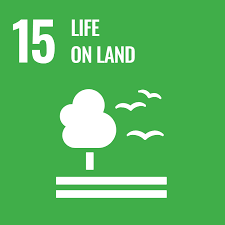

History of Weather Forecasting
The history of weather forecasting is a fascinating tale of human ingenuity and scientific progress, spanning millennia from ancient civilizations to the cutting-edge technology of today. From relying on celestial observations and animal behavior to harnessing the power of computers and satellites, our ability to predict the weather has evolved remarkably.
Early Weather Forecasting
Our ancestors, deeply connected to nature, sought to understand and predict the weather for survival and agricultural purposes. Ancient civilizations, such as the Babylonians, Egyptians, and Greeks, relied on observations of natural phenomena, including cloud patterns, animal behavior, and celestial movements, to make weather forecasts.
The Babylonians, around 650 BC, were among the first to record weather observations systematically, linking them to astronomical events. They also developed a system of dividing the sky into 12 equal parts, the zodiac, which they believed influenced weather patterns.
The Scientific Revolution and the Rise of Meteorology
The Scientific Revolution of the 17th and 18th centuries brought significant advancements in our understanding of the atmosphere and weather. Scientists like Galileo Galilei and Evangelista Torricelli developed instruments to measure atmospheric pressure and temperature, laying the foundation for modern meteorology.
In the 18th century, Benjamin Franklin conducted experiments on electricity and weather, proposing a theory of thunderstorms. His insights paved the way for further investigations into atmospheric electricity and its impact on weather patterns.
Modern Weather Forecasting: A Blend of Science and Technology.
Today, weather forecasting is a sophisticated science, combining theoretical models, advanced computational power, and a vast network of weather stations and satellites. Meteorologists use NWP models to simulate atmospheric processes and predict weather patterns, while continuous data from various sources is fed into these models to refine and update forecasts.
Weather forecasting has become an invaluable tool for various sectors, including aviation, agriculture, transportation, and emergency preparedness. Accurate forecasts help mitigate weather-related hazards, protect property and lives, and optimize resource allocation.
The Science Behind Weather Forecasting
Basic principles of Meteorology
The Tools and Instruments used in weather prediction, such as satellites, radar, and weather stations.
Visit
Meteorological Phenomena
Information on different Weather Phenomena, such as hurricanes, tornadoes, and thunderstorms.
Graphics and diagrams to illustrate these phenomena.
Visit
Role of Technology
The Role of Technology in modern weather prediction.
The advancements in computing power, satellite technology, and data collection.
Visit
Forecasting Methods
The various methods used in weather forecasting, including numerical weather prediction, computer models, and observational data analysis.
1. Doppler radar

Doppler Radar is the meteorologist’s window into observing severe storms. With 159 radar towers across the United States, NOAA’s National Weather Service has comprehensive coverage of the continental U.S. and partial coverage of Alaska, Hawaii, Puerto Rico and Guam. Doppler radar detects all types of precipitation, the rotation of thunderstorm clouds, airborne tornado debris, and wind strength and direction.
Learn more about Radar
2. Satellite data

Weather Satellites monitor Earth from space, collecting observational data our scientists analyze. NOAA operates three types of weather satellites. Polar orbiting satellites orbit the Earth close to the surface, taking six or seven detailed images a day. Geostationary satellites stay over the same location on Earth high above the surface taking images of the entire Earth as frequently as every 30 seconds. Deep space satellites face the sun to monitor powerful solar storms and space weather. NOAA also uses data from satellites operated by other agencies and countries.
Learn more about NOAA’s weather satellites
3. Radiosondes

Radiosondes are our primary source of upper-air data. At least twice per day, radiosondes are tied to weather balloons and are launched in 92 locations across the United States. In its two hour trip, the radiosonde floats to the upper stratosphere where it collects and sends back data every second about air pressure, temperature, relative humidity, wind speed and wind direction. During severe weather, we usually launch weather balloons more frequently to collect additional data about the storm environment.
Learn more about weather balloons and radiosondes
4. Automated surface-observing systems

ASOS (automated surface observing systems) constantly monitor weather conditions on the Earth’s surface. More than 900 stations across the U.S. report data about sky conditions, surface visibility, precipitation, temperature and wind up to 12 times an hour. Nearly 10,000 volunteer NWS Cooperative Observers collect and provide us additional temperature, snowfall and rainfall data. The observational data our ASOS and volunteers collect are essential for improving forecasts and warnings.
Learn more about ASOS
5. Supercomputers

NOAA’s Weather and Climate Operational Supercomputer System (WCOSS) is the backbone of modern forecasting. With 5.78 petaflop computing capacity it can process quadrillions of calculations per second. Our supercomputers are almost 6 million times more powerful than your average desktop computer. Observational data collected by doppler radar, radiosondes, weather satellites, buoys and other instruments are fed into computerized NWS numerical forecast models. The models use equations, along with new and past weather data, to provide forecast guidance to our meteorologists.
Learn more about NOAA’s supercomputers
6. AWIPS

AWIPS (NOAA’s Advanced Weather Information Processing System) is a computer processing system that combines data from all the previous tools into a graphical interface that our forecasters use to analyze data and prepare and issue forecasts, watches, warnings. This system uses NOAA supercomputers to process data from doppler radar, radiosondes, weather satellites, ASOS, and other sources using models and forecast guidance products. After meteorologists prepare the forecasts, AWIPS generates weather graphics and hazardous weather watches and warnings. All this helps our meteorologists create more accurate forecasts and faster than ever before.
Learn more about AWIPS
Sustainable Development Goals
The Sustainable Development Goals (SDGs), also known as the Global Goals, were adopted by the United Nations
in 2015 as a universal call to action to end poverty, protect the planet, and ensure that by 2030 all people
enjoy peace and prosperity.
The 17 SDGs are integrated—they recognize that action in one area will affect outcomes in others, and that
development must balance social, economic and environmental sustainability.
Countries have committed to prioritize progress for those who're furthest behind. The SDGs are designed to
end poverty, hunger, AIDS, and discrimination against women and girls.
The creativity, knowhow, technology and financial resources from all of society is necessary to achieve the
SDGs in every context.

Climate Action
Sustainable cities and communities prioritize environmental, economic, and social well-being. They
aim to reduce carbon emissions, improve public transportation, promote green spaces, and foster
inclusive communities. By addressing climate change, promoting equity, and ensuring efficient
resource use, these cities contribute to a more resilient and equitable future for all.

Sustainable Cities and Communities
Responsible Consumption and Production, a crucial Sustainable Development Goal (SDG 12), promotes
sustainable use of resources, reduction of waste, and ethical consumption practices. It advocates
for environmentally friendly and socially responsible production and consumption patterns to
safeguard the planet's well-being for present and future generations.

Life on Land
Climate action is the urgent global response to the growing environmental crisis. It involves
reducing carbon emissions, conserving natural resources, and adopting sustainable practices. Through
international cooperation and individual efforts, we aim to mitigate climate change, protect
ecosystems, and ensure a sustainable future for generations to come.
Good Health and Well-being
Life on land is a diverse and fascinating ecosystem, encompassing a wide array of habitats, from
dense forests to arid deserts. It supports a rich tapestry of flora and fauna, with countless
species uniquely adapted to terrestrial environments. Land-based life plays a critical role in
maintaining Earth's delicate ecological balance.
Conclusion
In conclusion, "Forecasting the Weather: The Art and Science of Weather Prediction" unveils the intricate tapestry that weaves together human intuition, scientific inquiry, and technological innovation to anticipate the ever-changing atmospheric conditions. This exploration has taken us through the historical evolution of weather forecasting, highlighting pivotal milestones that have shaped our understanding and ability to predict the skies.
About Us
This Website is made by the students of Lovely Professional University as a Project of Enviromental
Chemistry (CHE110)
Thank You